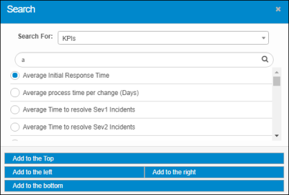
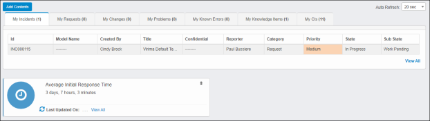
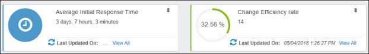
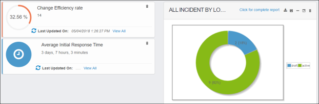

Add Contents to My Dashboard
Additional content can be added to the dashboard. Examples include Ad Hoc Reports, Calendars (change or outage), KPIs, etc.
Depending on the type of content added, various other functions become available. For example, if an Ad Hoc Report is added to the dashboard, a set of icons displays. These provide options to perform actions, such as displaying the entire report, exporting or saving the report, and minimizing or maximizing this section on the dashboard.
To place more content on the dashboard, do the following:
| 1. | In the navigation page, click My Dashboard. |
| 2. | Click Add Contents. The Search dialog box displays. |

| 3. | In the Search For field, click the drop-down list and choose the desired item. |
| 4. | In the blank Search field, enter the search criteria and click the Search icon. A list of results displays. |
| 5. | Either click the radio button next to the desired item OR enter different criteria and search again. |
| 6. | After making a selection, choose a location for the item to display on the dashboard, such as top, bottom, left, or right. |
Example 1: Add to the Top will place the selection (e.g., Average Initial Response Time) at the top of the Dashboard above all other items except the main dashboard area.

Example 2: Add to the Right will place the new selection (e.g., Change Efficiency rate) to the right of the top item.

You can also drag and drop items on the dashboard. In the example below, Change Efficiency rate was moved from the right to the left and above Average Initial Response Time. In addition, All Incidents by Location was added to the dashboard.

| 7. | Repeat the above process to place additional content on the dashboard. |
| 8. | To remove an item from the dashboard (excluding the top panel), click the trashcan icon. |